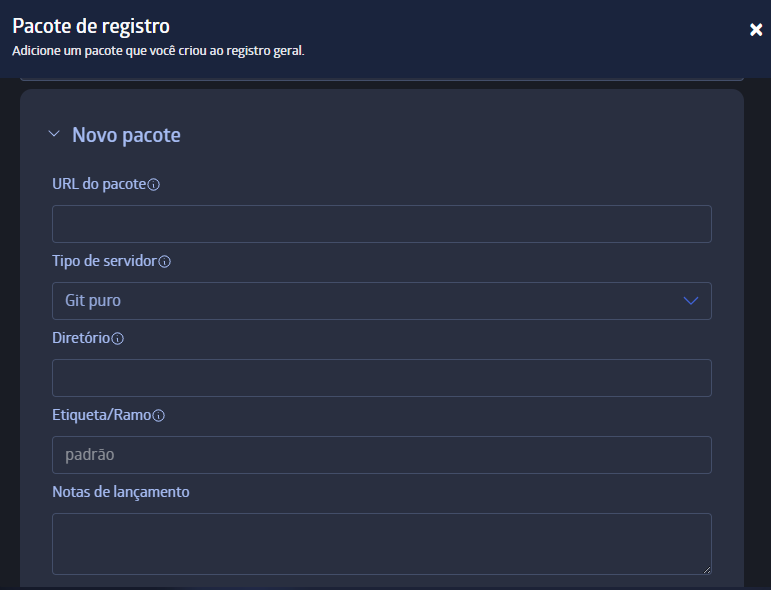

Para que serve o JuliaHub?
Plataformas colaborativas de programação são fundamentais para o avanço dos projetos de ciência de dados, computação científica, estatística, etc. Itso, pois facilitam a globalização da informação entre desenvolvedores. Se você deseja compartilhar projetos em Julia e se manter atualizado sobre as novidades da linguagem, aprenda neste tutorial como utilizar o JuliaHub.
Introdução
A denominação “Hub”, tanto em JuliaHub quanto em GitHub, refere-se ao termo em inglês que significa “o centro efetivo de uma atividade, região ou rede (de contatos, trabalhos)”. Assim, fica claro que essas redes funcionam como centros de compartilhamento de código em Julia — no caso do JuliaHub, voltado à linguagem Julia; e no caso do GitHub, com foco no controle de versões e ramificações de projetos por meio do Git.
Plataformas colaborativas de programação são fundamentais para o progresso dos projetos de ciência de dados, computação científica, estatística, etc. Isto, pois facilitam a globalização da informação entre desenvolvedores. Diferentemente de aplicações que hospedam arquivos colaborativos, como o Google Colab ou o Posit Cloud, o JuliaHub permite a criação simultânea de conteúdo pelos participantes do projeto, além de oferecer outras funcionalidades extremamente úteis.
Entretanto, parte dos recursos da plataforma requer liberação mediante pagamento, que é uma escolha dos desenvolvedores para manter a aplicação ativa e sustentável. Neste tutorial, você aprenderá a utilizar as funções gratuitas do JuliaHub e acessar os recursos pagos, compreendendo suas finalidades.
Criando uma conta
Ao acessar o site oficial do JuliaHub, a seleção do ícone de usuário o redirecionará para uma página com seis opções de login: por e-mail, GitHub, GitLab, Google e Linkedin. Após escolher uma das alternativas e acessar com sua conta, será necessário preencher os seguintes dados:

O título a ser preenchido corresponde ao seu cargo ou função dentro da organização mencionada.

Após completar as informações e selecionar “enviar”, você será direcionado para a página inicial da plataforma, onde encontrará seis funções principais disponíveis para acesso:
- Aplicações
- Notebooks
- Projetos
- Pergunte à IA
- Pacotes
- Recursos
Aplicações, Notebook e Projetos
Na aba Aplicações, é possível carregar Pluto Notebooks na nuvem, que são os alternativas em Julia aos Jupyter Notebooks (comoo os criados no Google Colab, por exemplo). Além disso, há a opção de carregar um ambiente de desenvolvimento completo com o Julia IDE, também em nuvem. Por fim, o Dyad Studio (antigo JuliaSim) consiste em uma plataforma avançada para desenvolvimento, refinamento, análise e implantação de modelos, e pode ser utilizado diretamente a partir do JuliaHub.
Apesar da grande utilidade para o público geral, o uso dessas funções exige o pagamento de USD 1,40 por hora de atividade (valores de jul. 2025), o que as torna inacessíveis para uma grande parte dos usuários — especialmente estudantes, que podem emular os códigos em outras plataformas colaborativas, ou que atuam com linguagens de programação já consolidadas no meio acadêmico, mas que ainda não incluem Julia de forma significativa.
Julia e IA
Em parceria com a OpenAI, a plataforma oferece seu próprio acesso à Inteligência Artificial, voltado para perguntas específicas sobre a linguagem Julia. Ainda em versão Beta no momento da redação desta postagem, as respostas são geradas a partir do banco de dados interno do JuliaHub. A seguir, apresenta-se um teste realizado para avaliar a qualidade e a precisão das respostas fornecidas pela IA:


De forma rápida e eficiente, a IA retorna instruções claras e exemplificadas sobre o que foi perguntado, além de incluir extensões consideradas relevantes pelo sistema que a opera. No teste apresentado acima, além de responder diretamente à questão sobre a variância clássica, a IA também trouxe informações complementares sobre a variância ponderada, os pacotes necessários para usar as funções mencionadas, como criar o vetor de dados na linguagem Julia e como exibir a saída de forma personalizada.
Pacotes
Na sessão Pacotes, o usuário tem acesso a 1248 páginas de pacotes em Julia criados por colaboradores da plataforma. É possível buscar pacotes por categoria, utilizando o filtro em “Tópicos”, ou procurar por pacotes específicos digitando o nome (ou parte dele) na lupa no canto superior direito.
Outro filtro disponível é o de “Licenças”, que são os documentos que definem como um pacote pode ser usado, modificado e distribuído. Dependendo da licença, o pacote pode ser limitado, por exemplo, apenas para fins pessoais, não permitindo o uso comercial. A licença também pode permitir ou proibir modificações no código-fonte, a redistribuição do pacote (ou de versões modificadas), além de estabelecer condições específicas de uso — como a obrigatoriedade de creditar o autor original.
Ao selecionar a pasta da “Fonte” do pacote desejado, a plataforma redireciona o usuário para a página correspondente no GitHub, onde é possível fazer o download do pacote compilado ou copiar o link para instalá-lo em seu ambiente de desenvolvimento.

Atualmente, a plataforma conta com 12.399 pacotes ativos, e você também pode colaborar com a comunidade de Julia registrando suas criações! A opção de registrar um novo pacote é gratuita e está disponível para todos os usuários. Para isso, é necessário fornecer as seguintes informações sobre o pacote que será compartilhado:

Recursos
Ao selecionar a opção Recursos, você terá acesso à documentação oficial do JuliaHub, ao contato do suporte e à seção de feedback, onde é possível avaliar sua experiência na plataforma e sugerir melhorias aos desenvolvedores.
Além disso, em Julia Binaries, é possível baixar os arquivos executáveis de Julia prontos para instalação — ou seja, pacotes compilados para diferentes sistemas operacionais e em diversas versões. Para aprender como baixar e configurar Julia direto na sua máquina, basta acessar os tutoriais já publicados no Blog!
Por último, a ferramenta “Explorar Webinars” redireciona o usuário para uma página com todos os Seminários Online, tanto os já realizados quanto os que ainda vão acontecer, organizados pela plataforma e seus parceiros. Para se inscrever para o próximo evento ou acessar um já ocorrido, selecione o seminário desejado e os dados da sua conta no JuliaHub serão automaticamente preenchidos no formulário. Caso o evento já tiver ocorrido, ao clicar em “Registre-se” (ou “Enviar”, no caso de seminários mais antigos) a gravação ficará instantaneamente disponível na própria página. Caso o seminário ainda vá acontecer, um convite do Zoom será enviado automaticamente para o e-mail associado à sua conta.
As informações exibidas na página principal de cada evento incluem a identificação dos oradores responsáveis pelo seminário, um resumo do tema abordado e sua motivação, além dos principais destaques que serão apresentados ao longo da sessão.
Ferramentas de IA foram utilizadas para correção ortográfica e aprimoramento do texto.